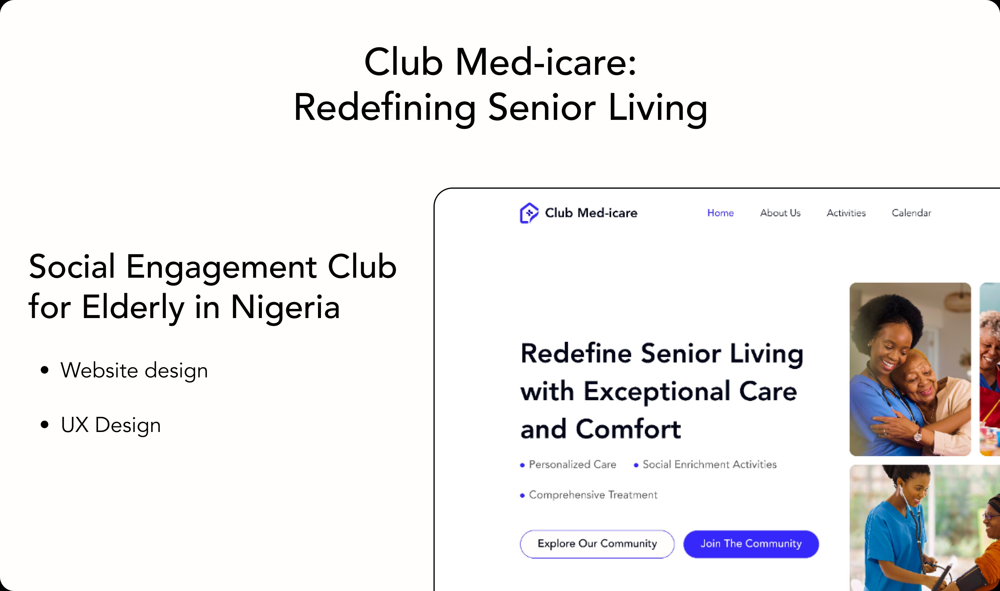
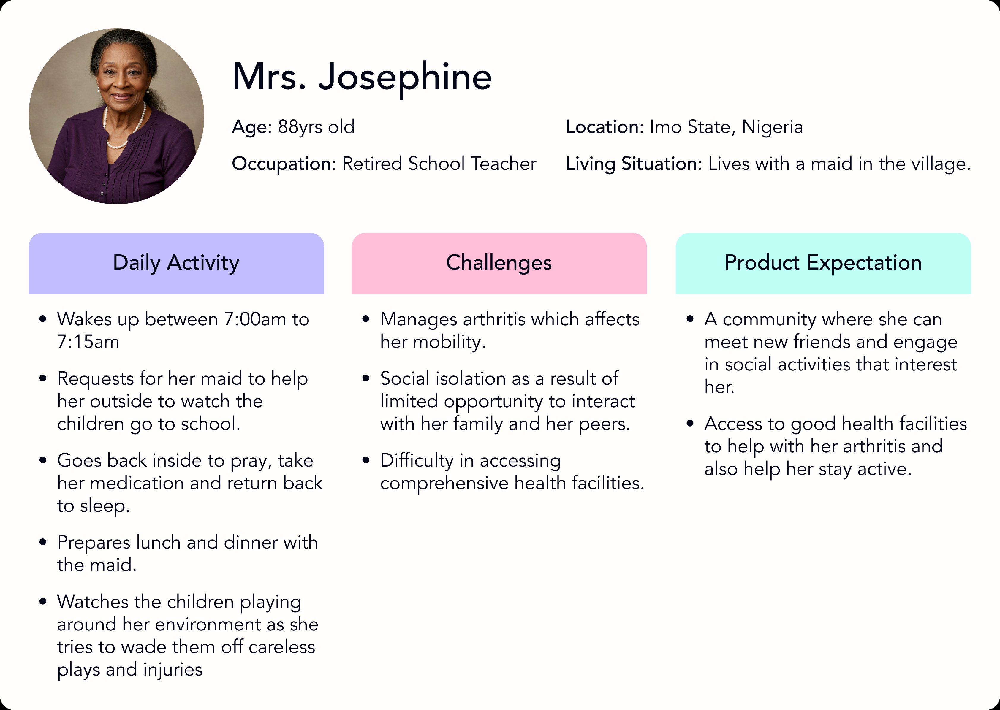
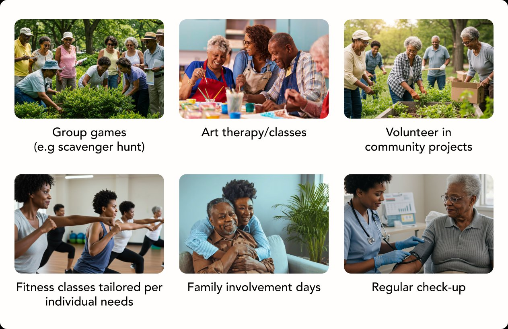
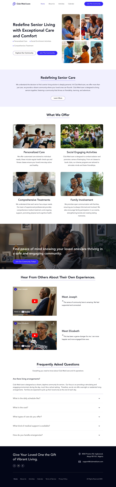

Club Med-iCare: Redefining Senior Living
A social engagement club designed to transform how we care for elderly Nigerians.
| Role | Product Designer |
| Scope | UX/UI · Website Design · UX Research |
| Sector | Healthcare · Social Impact · Nigeria |
Project Objective
In Nigeria, elderly individuals face significant challenges of social isolation and limited engagement, particularly as traditional family support systems evolve. Research indicates that social engagement is crucial for maintaining quality of life and well-being among seniors.
Club Med-iCare was designed to bridge this gap — combining medical supervision with vibrant community-building activities to give seniors not just care, but a life worth living.
Introduction
As societies evolve, the need for innovative solutions to address social isolation among seniors has become increasingly important. Traditional nursing homes often focus on basic care, but they can lack the social interaction and community engagement that are crucial for maintaining mental and physical health.
Club Med-iCare was established to fill this gap — creating a vibrant social club and active seniors community center that offers a refreshing alternative to conventional elderly care.

introduction.png'" />The Genesis: A Personal Insight
My grandmother, before her illness, was the heart of our family. Her laughter, her stories, her boundless love for her grandchildren — they defined our home. But when her health declined, everything changed.
After her treatment, the doctors advised us to limit contact with her to aid her recovery. What followed was heartbreaking. Instead of seeing her regain strength and vitality, I watched as her spirit faded. The once vibrant woman who brought life to our family became withdrawn, lonely, and disconnected. Her health declined rapidly, and it became painfully clear that isolation had taken its toll.
This experience made me question how elderly care is approached — and led me to think about solutions that could help people like my grandmother recover physically, but also feel engaged, connected, and alive again.

persona.png'" />The Problem: Traditional Nursing Homes in Nigeria
For many families in Nigeria, when elderly loved ones require specialized care, they are presented with two main options:
-
1Hire nurses or maids for home care While this provides convenience, it often leads to loneliness for the elderly as they lack meaningful social interaction.
-
2Place them in nursing homes Traditional nursing homes focus on medical treatments but often lack social engagement programs. Research has shown that these facilities can unintentionally become waiting places where seniors live out their remaining days without purpose or joy.
The Idea: A Different Kind of Elderly Care
Inspired by my grandmother's story, I envisioned a new kind of elderly care facility — a social engagement club designed to transform how we care for seniors in Nigeria. This facility would combine medical supervision with vibrant social activities to help seniors feel connected and purposeful.
Design Thinking Process
- Observation: Seniors often experience loneliness and isolation due to limited social interaction.
- Interviews: Families express concern about placing loved ones in nursing homes due to their sterile environments.
- Insights: Seniors thrive when they have opportunities for meaningful engagement with peers and family members.
Seniors in Nigeria lack access to care facilities that prioritize social engagement alongside medical supervision, leading to loneliness and reduced life expectancy.
Brainstormed solutions that combine healthcare with vibrant community-building activities.

ideate.png'" />UI Screens
Landing Page

landing-page.png'" />Club Med-iCare Model
Core Features
Group games, art therapy, fitness classes, music events, and storytelling circles.
Nurses and doctors monitor health while encouraging active participation in daily life.
Seniors form friendships within a warm, supportive, and purposeful environment.
Families stay informed and connected, knowing their loved ones are thriving.
Impact Goals
- Improve mental health by reducing loneliness among elderly Nigerians.
- Increase life expectancy through active social and physical engagement.
- Foster stronger bonds between seniors and their families.
- Provide peace of mind for families knowing their loved ones are cared for.
Conclusion
By combining medical supervision with vibrant social engagement programs, Club Med-iCare creates a space where seniors can thrive physically, emotionally, and socially.
Inspired by personal experience and backed by research and community feedback, Club Med-iCare represents hope for families seeking better options for their loved ones.